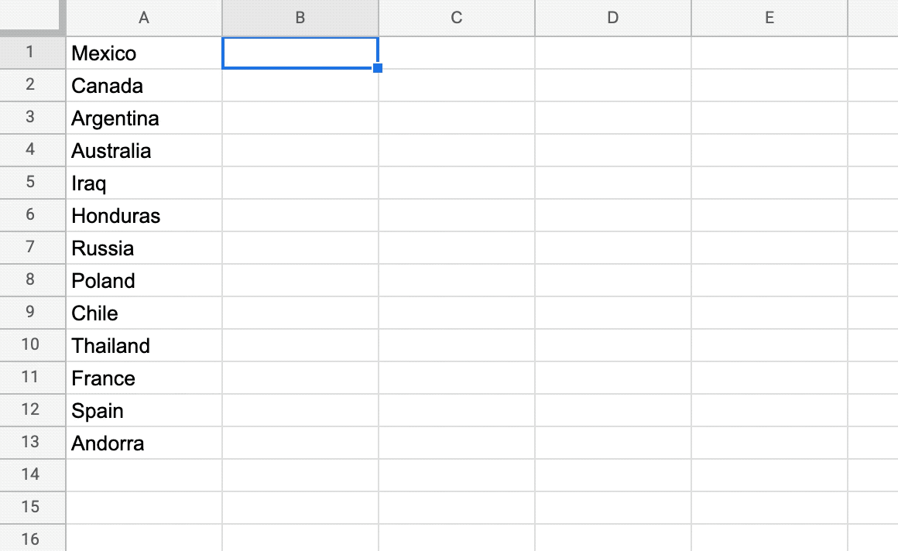
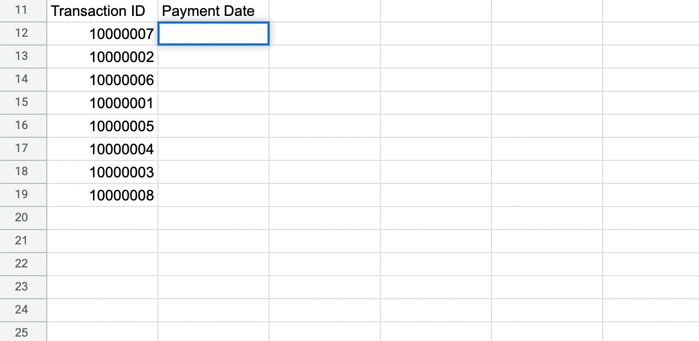
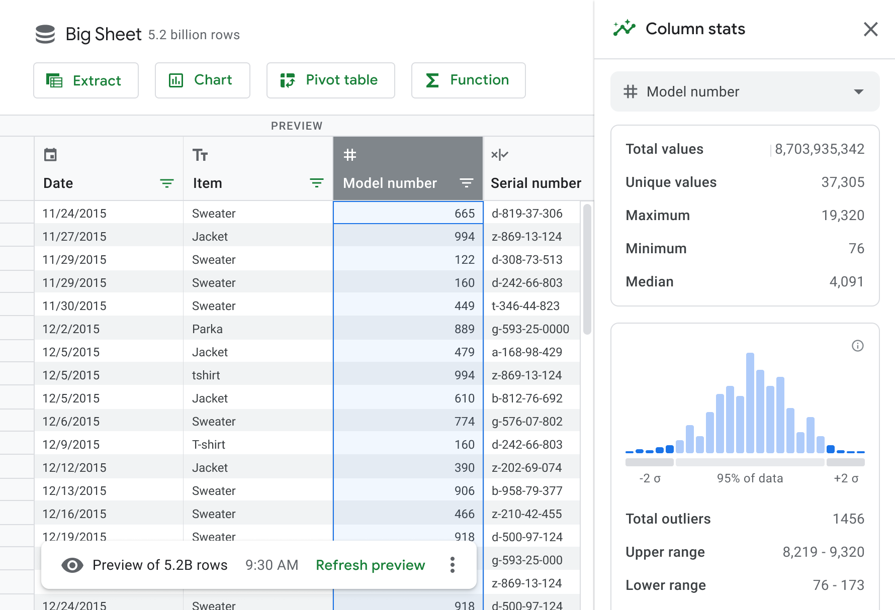
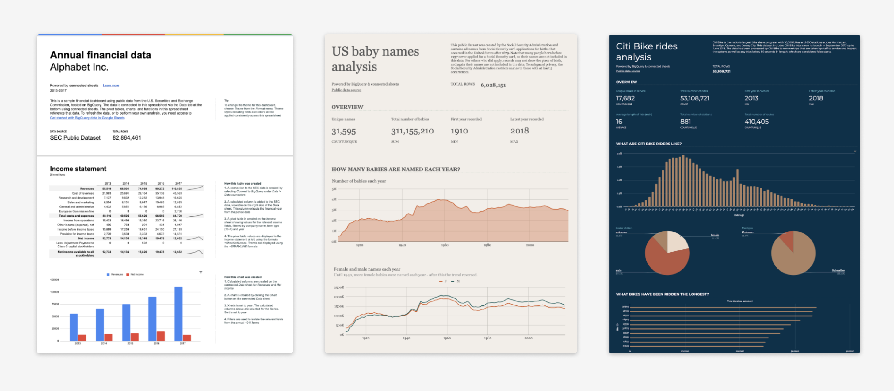

Elliott Malkin / Recent Work
This is a high-level selection of my recent work. Please contact me for a deeper background on process, deliverables, and strategic context. I'd be happy to walk you through it!
ML-Based Assistance
At Google, I've developed a host of features to assist users with some of the most painful moments in data anlysis workflows.
Smart Fill
Data entry can be unpleasant and very time consuming. So we developed SmartFill to input data for you instead, as soon as we detect intent.

Smart Cleanup
Dirty data is the biggest barrier to analysis and cleaning it is the most tedious task an analyst needs to do. So I designed a tool that detects anomalies, duplicates, and other issues that prevents analysts from doing their jobs. And it works instantly, with a single click.
Smart Formulas
Writing formulas is difficult, akin to writing code. So we created a collection of tools that instantly predict a formula for a given cell, detect issues with existing formulas, and provide real-time assistance (shown here) when users choose to write formulas on their own.
Big Data
Spreadsheets are an excellent tool for handling thousands of rows of data. But large enterprise customers needed a tool that could handle billions of rows of data. So we built a new product to do it.
Dirty data is the biggest barrier to analysis and cleaning it is the most tedious task an analyst needs to do. So I designed a tool that detects anomalies, duplicates, and other issues that prevents analysts from doing their jobs. And it works instantly, with a single click.
It's called Big Sheets. And it allows users to both understand and analyze this data, as well as build dashboards over these massive datasets.
The New York Times Mobile Transformation
Ok, this is not exactly recent. But it's a good summation of my work in my previous role at The New York Times.
When I first joined The Times as a product design director, our mobile apps were simple feed readers. There was little to no variation across elements.
So I advocated for a major investment to break the downstream dependence from our desktop website. By 2015 we had a set of apps written, designed, and edited expressly for Android, iOS, and mobile web.